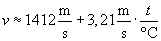
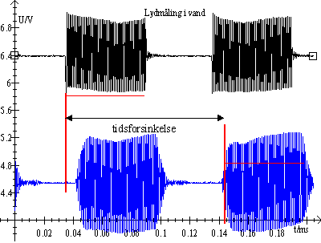
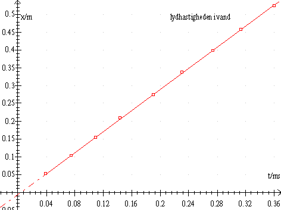

At bestemme lydens hastighed i vand.
Til øvelsen benyttes et kar med vand, et termometer, to uldtralydtransducere TC3027, to tonegeneratorer: Hameg HM8130 og FNG 120 og et digitalt oscilloskop Hameg HM407, som tilsluttes Datalyse.
De to transducere anbringes i et kar med vand, fx en blomsterkasse. Den ene transducer (modtageren) tilsluttes skopets indgang y2. På HM8130s udgang sættes et t-stik, så signalet kan sendes både til skopets indgang y1 og til den anden transducer (senderen).
HM8130 indstilles til 1MHz sinus med en amplitude på 2 volt. FNG120 indstilles til 10 kHz puls (TNT) og signalet kobles til GATE indgangen på HM8130.
Med denne indstilling, vil HH8130 udsende sinuspulser og tidsforsinkelsen i vandet kan måles på skopet. Indstillingen af skopet er nem, for det er forsynet med autodetect. Der skal nok efterreguleres lidt.
Vælg forskellige afstande mellem transducerne og mål afstanden, fx ca. 5cm, 10cm, 15cm, 20cm…. Overfør skopbilledet til Datalyse og mål tidsforsinkelsen. Mål temperaturen i vandet.
Når afstanden bliver større end ca. 20 cm forskydes pulsen mere en periode, men så øges Dt blot med 0,1000 ms = (1/10 kHz).
Lydhastigheden i rent vand er 
Her er et eksempel på et skærmbillede fra Datalyse med lidt forklaring til måling af tidsforsinkelsen.

Sammenlign den målte lydhastighed i vand med den teoretiske hastighed.
Angiv fejlkilder og vurder resultatet.
Transduceren kan både sende og modtage ultralydbølger ved 1 MHz. Som det fremgår, skal transducerne skal være rettet mod hinanden.
| t/ms | x/m |
| 0.0394 | 0.052 |
| 0.0744 | 0.103 |
| 0.1093 | 0.155 |
| 0.1435 | 0.209 |
| 0.1900 | 0.274 |
| 0.2312 | 0.337 |
| 0.2740 | 0.398 |
| 0.3136 | 0.457 |
| 0.3601 | 0.525 |

Lineær regression: f(t)=1.476*t-0.00564
Dvs lydhastigheden er målt til 1476 m/s
ved 20°C er lydhastigheden i vand 1476 m/s
Carl Hemmingsen, Frederikssund Gymnasium